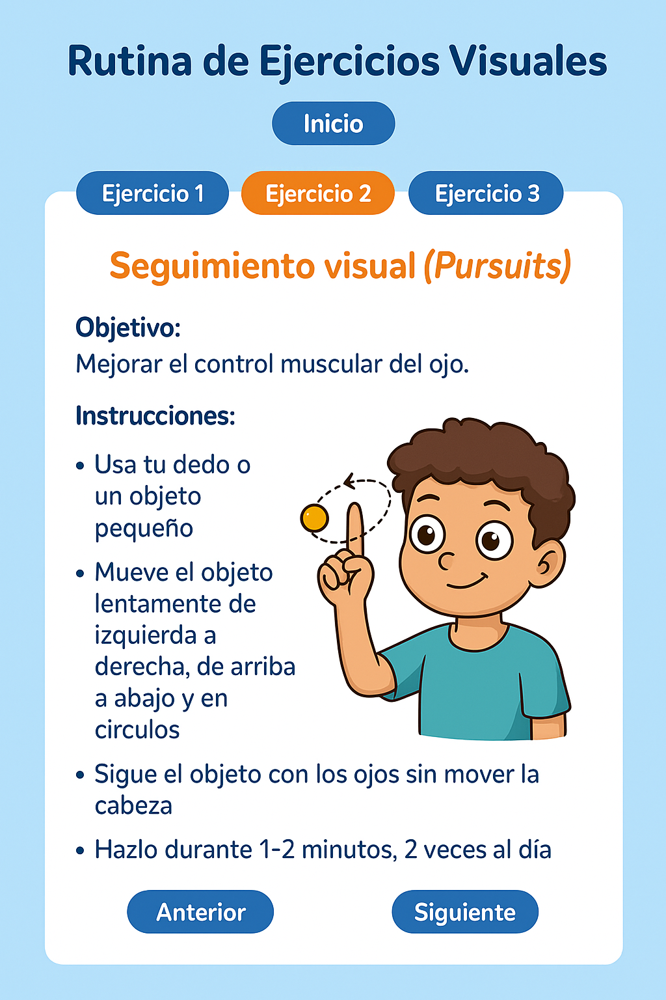

2. Seguimiento Visual (Pursuits)

- Usa tu dedo o un objeto pequeño
- Mueve el objeto de izquierda a derecha, de arriba a abajo y en círculos
- Sigue el objeto con los ojos sin mover la cabeza
- Hazlo durante 1-2 minutos, dos veces al día
Inicio
Anterior
Siguiente